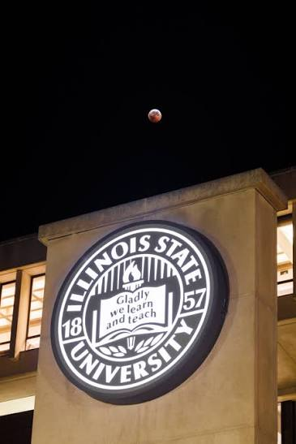

Sequence in Audio and Music Production and Interdisciplinary Technologies: - Students will be allowed to continue in this sequence if they meet and continue to maintain an overall cumulative GPA of 2.50.
Sequence in Game Design: - Students will be allowed to continue in this sequence if they meet and continue to maintain an overall cumulative GPA of 2.50 and a cumulative GPA of 3.0 within the major. Additionally, students in the Game Design Sequence must maintain consecutive Fall–Spring enrollment in their final at the University. Any student not enrolled at the university for more than one semester must reapply to the sequence. Students who leave the Sequence in Game Design may continue as a Creative Technologies major in Audio and Music Production or Interdisciplinary Technologies if they have an overall cumulative GPA of 2.50.
Students will be allowed to continue in the Creative Technologies program if they meet and continue to maintain a cumulative GPA of 2.50 and have demonstrated competency through an intermediate portfolio review.
High achieving students with a cumulative GPA of 3.20 or higher may apply to the accelerated sequence one year before completion of their undergraduate degree. This sequence allows students to take up to 12 hours of approved graduate courses that will count for both the undergraduate and graduate program in Creative Technologies. Students can then apply to the Creative Technologies graduate program in the spring of their senior year. Enrollment in the Accelerated Sequence does not guarantee final admission into the Creative Technologies graduate program. For additional information on minimum requirements for admission and the application and selection process, visit IllinoisState.edu/Majors and the Creative Technologies Program advisor.
The Audio and Music Production sequence provides concentrated study in sound recording, audio production, sound design, music composition, theory, and business and entrepreneurship practices, along with a host of elective experiences across a range of creative/technical fields including video, sound, electronic music, music production, gaming, motion graphics, interactivity, AR/VR, UI/UX, mobile, web, and computer programming concepts.
The Game Design sequence provides concentrated study in game design and production, along with a host of elective experiences across a range of creative/technical fields including video, electronic music, music production, motion graphics, interactivity, AR/VR/XR, UI/UX, mobile, web, and computer programming concepts.
The Interdisciplinary Technologies sequence provides concentrated study in mobile, web and computer programming concepts, UI/UX, motion graphics, and interactivity along with a host of elective experiences across a range of creative/technical fields including sound, electronic music, music production, AR/VR/XR, and game design.